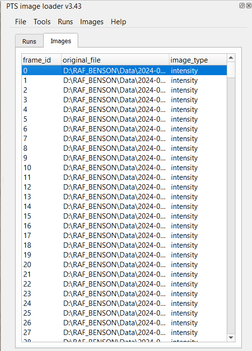
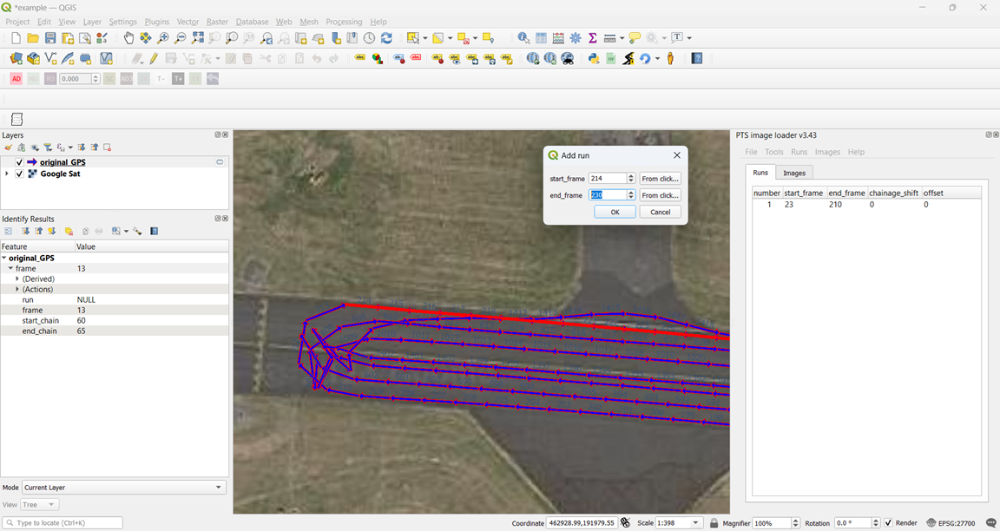
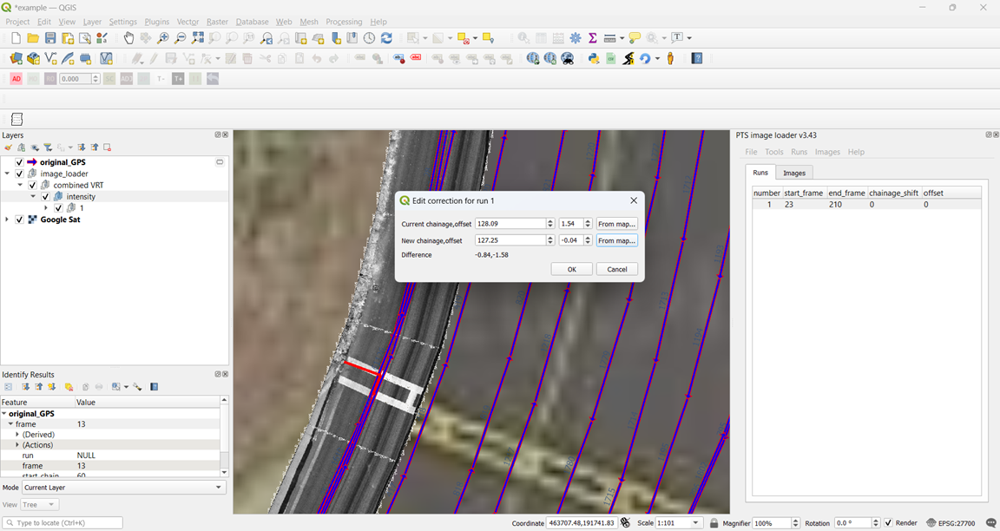

The images table tells the plugin where the images to process are stored.
"Images","Find images from folder..." will add a row for every .jpg file in folder and subfolders.
The plugin can also find image details from a "raster image load" file produced by the distress plotter macro. This is through "File","Open","Open raster image load file..." If doing this project_folder("Tools","Settings")/data is searched for original jpg filenames.

Create runs through the "runs from polygons layer" dialog.
Or by right clicking the runs table then "Add new run...".


Choose a projection for spatial calculations through "Tools , settings...". EPSG:27700 for surveys in Britain.
Load GPS through "File, Open, Open gps...".
GPS data is usually in a file like "project_folder\Hawkeye Exported Data\MFV1_001-rutacd-1.csv".
Use "Tools" , "View", "View GPS data" to view this as a QGIS layer named "original_GPS"
"virtual raster text" files are small text files containing links to the georeferenced images. Viewing a VRT file is much faster and less likely to crash QGIS than viewing its images as seperate layers.
Distress data like cracking,rutting and joint faulting is contained in a folder like 'D:\RAF_BENSON\Data\2024-01-08\MFV1_001\Run 1\LCMS Module 1\Results'
The plugin can load this from .acdx files or xml files. Acdx files are zipped xml files produced by hawkeye.
"Tools","View",... will apply corrections and make a tempuary layer in QGIS.